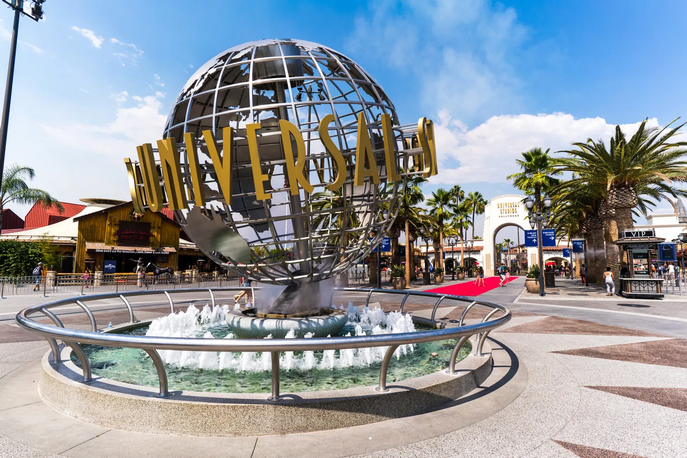

My favorite Places
- Los Angeles
- referred as L.A., is the largest city in the Southern California. It is definitely one of the most famous cities around the world because of its developed entertainment industry, film industry as well a great deal of well-known landmarks.
Universal Studio
Universal Studio is the most famous film studio and theme park in LA, which is one of the must-visit places if you go to LA. It is known as highly themed immersive lands which translate to the understanding of iconic movie and TV dramas in our real life. Harry Potter, Transformer, Fast & Furious are three most popular themes in the park, which attract most popular to visit. I really enjoy all these facilities in the park. To explain, I'm a fan of these film series, so when I in the park, I believe that these facilities really provide me a feeling to become a part of it.

Image Resource: ticket.com

Disneyland Park
According to the guide, The Disneyland Park in L.A is the only one which designed and build under the direct supervision of Walt Disney. Therefore, it has the unique essence compared to the other Disneyland Park around the world. In the park, there are around 150 facilities, which provide plenty of choices for visitors. Among all of these facilities, Space Mountain, Indiana Jones Adventure, Pirates of the Caribbean, and the Splash Mountain (The Timeout website also shows 25 best rides in Disneyland) are the representative and popular ones which most visitors would visit. In my opinion, the amusement equipments in Disneyland Park is various and fantastic, which makes me don't want to leave each time. Overall, Disneryland is the place I must choose to visit each time when I go to L.A.